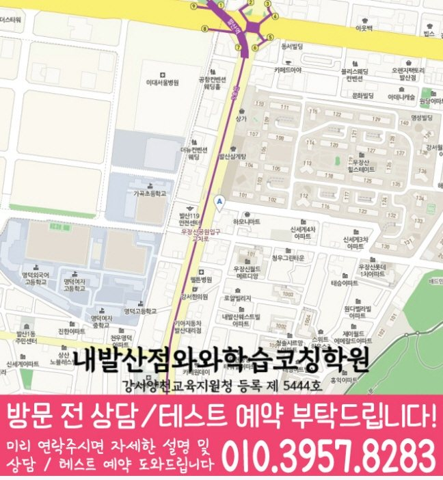

현재 학년과 과목
현재 학년과 배우려는 과목을 각각 정하세요. 같은 지점이라도 과목별 시작 학년이나 추가 조건이 다를 수 있으므로 수강 안내를 따로 확인합니다.
학년·과목별 안내
내발산동에서 수학 수강을 준비할 때 학년별 안내를 고를 수 있습니다. 와와학습코칭학원 내발산점의 자료를 기준으로 과목과 학년을 구분했으며, 현재 개설 여부와 시간표는 상담에서 확인해 주세요.
| 학년·과목 | 안내 학년 | 조건과 자세한 안내 |
|---|---|---|
| 초등 수학 | 초3~초6 | 초등 수학 수강 안내 |
| 중등 수학 | 중1~중3 | 중등 수학 수강 안내 |
| 고등 수학 | 고1·고2 | 내발산점의 고등 수학 안내 학년은 고1·고2입니다. 선택과목과 현재 수업 시간은 상담에서 확인해 주세요. 고등 수학 수강 안내 |
자료의 안내 범위이며 현재 모집·개설 여부와 시간표는 별도 확인이 필요합니다.
현재 학년과 배우려는 과목을 각각 정하세요. 같은 지점이라도 과목별 시작 학년이나 추가 조건이 다를 수 있으므로 수강 안내를 따로 확인합니다.
학교 진도와 사용하는 교재, 최근 혼자 해결하기 어려웠던 단어나 문제를 준비하세요. 다른 학생의 진도보다 본인의 시작 수준을 설명하는 데 도움이 됩니다.
학교·이동·과제 시간을 고려해 상담할 요일과 가능한 시간을 정리하세요. 표시된 학년 범위만으로 시간표나 현재 자리를 확정하지 않습니다.
표는 제공된 지점 자료의 학년 범위입니다. 과목별 추가 조건과 현재 개설 여부, 가능한 시간표를 해당 수강 안내와 상담에서 확인해 주세요.
공부법은 현재 이해 수준에 맞게 참고할 수 있지만, 수강 가능한 학년과 조건은 현재 학년에 해당하는 안내를 확인해 주세요. 다른 학년의 조건을 그대로 적용하지 않습니다.
현재 학년과 희망 과목, 학교 진도와 사용하는 교재, 최근 어려웠던 문제나 문장, 실제 가능한 시간을 준비하면 필요한 안내를 고르기 쉽습니다.
와와학습코칭학원 내발산점으로 연결된 지점 안내에서 위치와 과목별 정보를 확인할 수 있습니다. 현재 학년과 희망 과목을 알려주고 010-6839-8283으로 전화 또는 문자 상담해 주세요.

SAME LOCAL PAGE
내발산동 지역의 과목별·학년별 페이지 23개를 목적별로 묶었습니다. 필요한 조합을 펼쳐서 바로 이동해보세요.
수강 상담 준비
학교 진도와 어려웠던 부분, 실제 가능한 시간을 준비해 내발산점의 과목별 수강 조건과 현재 시간표를 확인해 주세요.